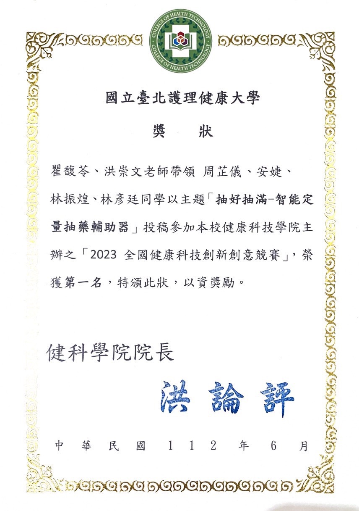
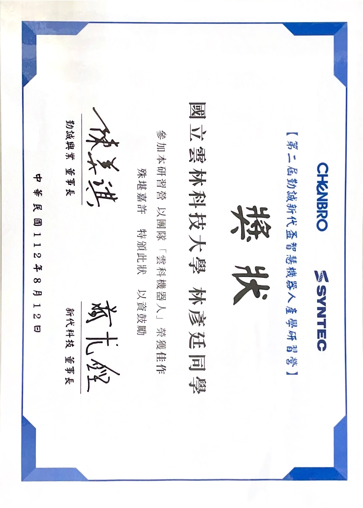
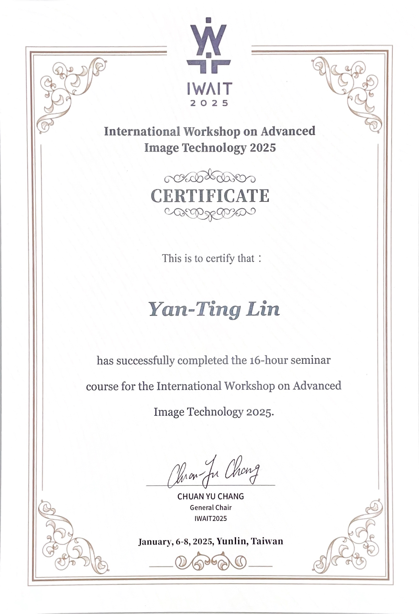

Steven Lin
I'm Full-Stack Engineer
About
擁有跨領域技術能力，致力於解決工業應用中複雜的技術挑戰。曾參與多項 AI 應用與自動化系統開發，包含瑕疵檢測、資料擷取、設備聯網與網頁呈現。
林彥廷
- Birthday: 2001/02/02
- Website: steven-lin-tech.github.io/steven.github.io/
- Phone: 0916355516
- City: 台灣 彰化
- Age: 24
- Degree: 碩士
- Email: a21170000@gmail.com
- Job Search: 全端工程師, 後端工程師, 軟體工程師
- 性格積極主動： 喜歡挑戰新事物，樂於學習，具備良好溝通與自我驅動能力。
- 實務與合作經驗豐富： 參與多項產學合作專案，熟悉從需求訪談到系統開發的完整流程。
- 技術能力扎實： 精通 Python、C#、Web 開發，具備影像處理、嵌入式控制與 AI 部署經驗。
- 整合與架構思維： 擅長跨平台系統整合與模組化設計，能規劃高效、穩定且具擴充性的解決方案。
- 創新導向與目標導向： 致力於推動智慧製造、數位轉型與技術創新，為企業創造最大價值。
Resume
從學術研究到業界實作，我累積了豐富的開發經驗與跨領域整合能力。面對每一次挑戰與責任，我秉持著持續學習與解決問題的精神，期望在軟體與自動化領域中創造更大價值。
Education
國立雲林科技大學
2023 - 2025
電機工程系
碩士畢業
國立雲林科技大學
2019 - 2023
電機工程系
學士畢業
Work Experience
數位信號分析與應用助教
2023 - 2025
國立雲林科技大學
- 教授 傅立葉變換、Z 變換與濾波器設計概念。
- 協助學生架設開發環境，確保工具與套件正確配置。
- 協助學生使用 Python 進行信號處理與除錯。
- 撰寫教材並提供 DSP 實務應用指導。
Skills
擅長 AI 演算法、後端開發與嵌入式控制，致力於打造高效穩定的自動化解決方案。
.NET / C# 應用開發
使用 ASP.NET 開發後端與應用程式：
- C# / Web API
- MVC 架構設計
- Entity Framework
網頁後端與伺服器管理
負責網站後端與系統管理維運：
- JWT 身份驗證
- Swagger 文件生成
- IIS 架站 / 分離式架構
資料庫系統維護
負責資料庫設計、查詢與管理：
- MySQL / PostgreSQL
- SQL 查詢語法與優化
- DBeaver / HeidiSQL 管理工具
Python 開發與 AI 應用
影像處理與 AI 演算法開發經驗豐富：
- OpenCV / PyQt5 UI
- YOLO / PyTorch
- Flask API 建構
- Thread / Process
DevOps 與系統維運
具備基礎自動化與部署能力：
- GitHub Actions
- Docker 部署管理
嵌入式系統與 MCU 控制
擅長控制硬體與感測器應用：
- Arduino / RX62T
- C / Python MCU 編程
- PWM / MTU 控制
Portfolio
以下是我參與與開發的專案介紹，結合影像處理、AI 與 Web 應用，強調技術整合與實作能力。
- All
- AOI
- Web
{kind=link}
{kind=link}
{kind=link}
{kind=link}
Achievements

全國健康科技創新競賽 第一名
透過RX62T製作一個能用APP自由控制的自動抽藥機

勤誠新代智慧機器人產學營 佳作
暑假與同學組隊去參加一個機械手與AOI結合的產線規畫比賽
